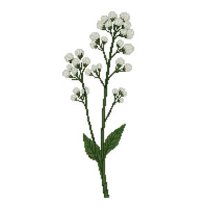

Baby's Breath 'Bristol Fairy'
Gypsophila paniculata 'Bristol Fairy'

Baby's Breath 'Bristol Fairy' is a perennial for mid-border, suited to full sun and loam, sandy soil or chalk, flowering Jul, Aug.
| Type | Perennial |
|---|---|
| Mature height | 90 cm |
| Spread | 75 cm |
| Aspect | full sun |
| Foliage | Deciduous |
| Hardiness | USDA 3a-9a, RHS H7 |
| Pollinator-friendly | Yes |
| Pet-safe | No |
Where to use it in a border
At around 90 cm, it sits best through the middle of a border, between taller structure behind and edging in front. Give it about 75 cm of room to spread. It is hardy across USDA zones 3a to 9a and rated H7 by the RHS, so check it suits your area before planting.
It appears in our lists of full sun, sandy soil, chalk soil, pollinator-friendly plants.
Border Builder uses Baby's Breath 'Bristol Fairy''s height, spread, soil, bloom months and companions to place it in a full border plan for your own conditions, on iPhone and iPad.
Flowering through the year
Worth knowing
- Not recorded as pet-safe; site it away from pets that graze if that matters to you.
- Its flowers are valued by bees and other pollinators.
Good companions
Plants that share its conditions and style, chosen to complement its place in the border:
- African Marigoldto edge in front
- Allium 'Purple Sensation'to flower when it does not
- Apple 'Bramley's Seedling'for height behind it
- Apple 'Cox's Orange Pippin'for height behind it
- Bergenia 'Purpurea'to edge in front
- Blue Windflowerto edge in front